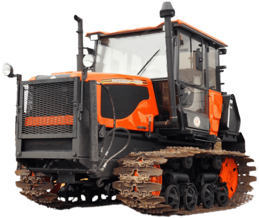

Волгоградский тракторный завод
Волгоградский тракторный завод ВТГЗ, является одним из крупнейших производителей гусеничных тракторов в России. Основанный в 1930 году, завод ВТГЗ специализируется на производстве сельскохозяйственных и промышленных тракторов ДТ-75, а также их современных аналогов.
Одним из самых известных и широко используемых продуктов завода является гусеничный трактор ДТ-75 и АГРОМАШ-90ТГ, которые применяются в различных отраслях, включая сельское, лесное и дорожное хозяйство и коммунальных нужд.
Тракторы ДТ-75 обладают рядом преимуществ, которые делают их незаменимыми в указанных отраслях. Они отличаются высокой производительностью, надежностью, простотой в эксплуатации и обслуживании. Благодаря гусеничному ходу эти машины обладают повышенной проходимостью и устойчивостью, что позволяет им работать в сложных условиях и на разных типах грунта. Кроме того, ДТ-75 имеют относительно низкую стоимость, что делает их доступными для широкого круга потребителей. Волгоградский тракторный завод постоянно работает над совершенствованием своей продукции, внедряя новые технологии и улучшая технические характеристики тракторов. В последние годы ВТГЗ активно выпускает современные аналоги трактора ДТ-75, что позволяет ему оставаться конкурентоспособным на мировом рынке спецтехники.
Волгоградский тракторный завод постоянно работает над совершенствованием своей продукции, внедряя новые технологии и улучшая технические характеристики тракторов. В последние годы ВТГЗ активно выпускает современные аналоги трактора ДТ-75, что позволяет ему оставаться конкурентоспособным на мировом рынке спецтехники.
Преимущества
Тракторы напрямую от завода производителя
- В наличии более 25 тракторов
- Высочайший контроль качества
- Покупка трактора без посредников
Расширенная гарантия до 24 месяцев или 2000 моточасов
- Техническое обслуживание в регионах
- Техническая поддержка 24/7
- Сервисная служба
Профессионально ответим на ваши вопросы
- Специалисты помогут с выбором техники
- Сопроводим сделку от начала до конца
- Организуем процесс доставки
Выгодные цены на покупку трактора
- Низкие цены от производителя
- Гибкие условия оплаты
- Спецпредложения
Доставка в любую точку России и СНГ
- Быстро доставим трактор по России
- Грузовой автотранспорт, тралы, открытые площадки
- Речные и морские перевозки
Оригинальные запасные
части
- Большой склад запчастей, узлов и агрегатов
- Специалист поможет с подбором запчастей
- Оперативная доставка любой ТК
Заявка на технику
Волгоградский тракторный завод производит гусеничные тракторы общего назначения с тяговым классом 3-6, бульдозеры на их базе, различное навесное и съемное оборудование.
Волгоградский тракторный завод постоянно внедряет новые технологии и улучшая технические характеристики тракторов.
-
Трактор ДТ-75
Трактор ДТ-75 - это легендарный советский гусеничный трактор, который широко используется в сельском и лесном хозяйстве, а также в коммунальной, дорожной и строительной сферах. На сегодняшний день выпускаются тракторы ДТ-75 нового образца.
Благодаря своей надежности и универсальности, этот трактор стал одним из лидеров на рынке сельскохозяйственной техники. Одной из главных особенностей трактора ДТ-75 является его дизельный двигатель.
Все двигатели обеспечивают достаточную мощность для выполнения различных задач, при этом расход топлива остается на приемлемом уровне.Бульдозеры ДТ-75 могут быть оснащены различными видами бульдозерных отвалов, что позволяет использовать его для выполнения самых разных задач - от уборки снега до работ с грунтами и сыпучими материалами. Благодаря наличию задней навески и вала отбора мощности(ВОМ), трактор ДТ-75 может работать с большим спектром прицепного и навесного оборудования, что делает его еще более универсальным и удобным в использовании. Наша компания также производит спецтехнику на базе трактора ДТ-75, такую как шнекороторные и фрезерно-роторные снегоочистители, траншеекопатели, грунторезы и бурильное оборудование, водоотливные и дождевальные установки.
-
Трактор АГРОМАШ-90ТГ
Гусеничный трактор АГРОМАШ-90ТГ — это современная версия самого массового в СССР трактора ДТ-75. Производство данного трактора начато в 2013 году на Волгоградском тракторном заводе. Сейчас трактор АГРОМАШ-90ТГ выпускается заводом АГРОМАШ в городе Чебоксары.
Универсальность, надёжность, проста в обслуживании, высокая проходимость, способность работать в самых суровых условиях — это лучшие качества, которые АГРОМАШ-90ТГ унаследовал от своего предшественника трактора ДТ-75.
Тракторы АГРОМАШ-90ТГ активно сменяют устаревшие модели трактора ДТ-75 на предприятиях и в хозяйствах. Трактор АГРОМАШ-90ТГ идеально подходит для выполнения различных задач в сельском и лесном хозяйстве, дорожной, строительной и коммунальной сфере. Он оснащен турбированным двигателем ММЗ Д-245.5S2 мощностью 70 кВт(95 л.с.), что позволяет ему легко справляться с тяжелыми работами, такими как вспашка земли, бульдозерные работы.
Бульдозеры АГРОМАШ-90ТГ могут быть оснащены различными видами бульдозерных отвалов, что позволяет использовать его для выполнения самых разных задач - от уборки снега до работ с грунтами и сыпучими материалами. Благодаря наличию задней навески и вала отбора мощности(ВОМ), АГРОМАШ-90ТГ может работать с большим спектром прицепного и навесного оборудования, что делает его еще более универсальным и незаменимымТрактор Агромаш-90ТГ — это отличный выбор для тех, кто хочет приобрести надежный и эффективный гусеничный трактор для своего хозяйства или предприятия.
-
Трактор ВТГ-100
Трактор ВТГ-100 является эффективным и надежным гусеничным трактором 3-его тягового класса. Тракторы ВТГ-100 широко используются в сельском и лесном хозяйстве, для дорожных, строительных и коммунальных работ. Тракторы эффективно работают в различных климатических условиях.
Кабина трактора просторная с отличным обзором, для комфорта оператора кабина трактора оснащается кондиционером, подрессоренным сиденьем с регулировкой по высоте. Лёгкое и удобное управление тракторам обеспечивает наличие пневмоусилителей на органах управления.
Тракторы ВТГ-100 оснащаются дизельными двигателями ММЗ Д260.8S2-850 мощностью 72 кВт(98 л.с) , который обеспечивает оптимальное сочетание производительности и топливной экономичности. Бульдозеры на базе трактора ВТГ-100 могут быть оборудованы различными типами отвалов, что позволяет использовать трактор под конкретные задачи. Благодаря наличию задней навески и вала отбора мощности, трактор может работать с большим спектром прицепного и навесного оборудования.
Это значительно расширяет возможности применения трактора ВТГ-100 и делает его универсальным решением для различных видов работ. Завод-производитель предлагает широкий ассортимент спецтехники на базе трактора ВТГ-100, включая шнекороторные и фрезерно-роторные снегоочистители, траншеекопатели, грунторезное и бурильное оборудование, водоотливные установки. На все тракторы ВТГ производитель даёт расширенную гарантию, обеспечивает сервисное обслуживание в любом регионе и техническую поддержку.
Контакты
- Адрес
-
г. Волгоград, ул. Дзержинского, 1
- Горячая линия
- 8 (800) 600 09 08
- Отдел продаж
- 8 (8442) 60 50 45 8 (8442) 60 50 44